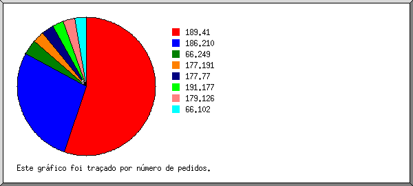

Estatísticas do Servidor Web de suportecontainer.com.br
Estatísticas do Servidor Web de suportecontainer.com.br
Começo do programa em Seg-19-Set-2016 09:18.
Análise de pedidos desde Qua-14-Set-2016 14:51 até Seg-19-Set-2016 07:45 (4,70 dias).
Estatísticas do Servidor Web de suportecontainer.com.brComeço do programa em Seg-19-Set-2016 09:18.
Análise de pedidos desde Qua-14-Set-2016 14:51 até Seg-19-Set-2016 07:45 (4,70 dias).
(Ir a: Início | Sumário Geral | Relatório Mensal | Resumo Diário | Resumo Horário | Relatório de Domínios | Relatório de organizações | Relatório de referência falhada | Relatório do sítio de referência | Relatório de Leitores | Resumo de Leitores | Relatório de Sistemas Operativos | Relatório de Códigos de Estado | Relatório de Tamanho de Ficheiro | Relatório de Tipos de Ficheiro | Relatório de Directorias | Relatório de Pedidos)
Pedidos atendidos: 1 926
Número médio de pedidos atendidos por dia: 409
Pedidos de páginas atendidos: 50
Número médio de pedidos de páginas atendidos por dia: 10
Pedidos não atendidos: 324
Ficheiros diferentes solicitados: 87
Servidores diferentes atendidos: 23
Tráfego total: 67,72 megabytes
Tráfego médio transferido por dia: 14,40 megabytes
(Ir a: Início | Sumário Geral | Relatório Mensal | Resumo Diário | Resumo Horário | Relatório de Domínios | Relatório de organizações | Relatório de referência falhada | Relatório do sítio de referência | Relatório de Leitores | Resumo de Leitores | Relatório de Sistemas Operativos | Relatório de Códigos de Estado | Relatório de Tamanho de Ficheiro | Relatório de Tipos de Ficheiro | Relatório de Directorias | Relatório de Pedidos)
Cada unidade ( ) representa 2 pedidos de páginas ou fracção.
) representa 2 pedidos de páginas ou fracção.
| mês | N.ped | Pgs. | |
|---|---|---|---|
| Set 2016 | 1926 | 50 |   |
Mês mais movimentado: Set 2016 (50 pedidos de páginas).
(Ir a: Início | Sumário Geral | Relatório Mensal | Resumo Diário | Resumo Horário | Relatório de Domínios | Relatório de organizações | Relatório de referência falhada | Relatório do sítio de referência | Relatório de Leitores | Resumo de Leitores | Relatório de Sistemas Operativos | Relatório de Códigos de Estado | Relatório de Tamanho de Ficheiro | Relatório de Tipos de Ficheiro | Relatório de Directorias | Relatório de Pedidos)
Cada unidade () representa 1 pedido de uma página.
| dia | N.ped | Pgs. | |
|---|---|---|---|
| Dom | 1 | 1 | |
| Seg | 1 | 1 | |
| Ter | 0 | 0 | |
| Qua | 648 | 12 |  |
| Qui | 639 | 20 | |
| Sex | 369 | 8 | |
| Sab | 268 | 8 | |
(Ir a: Início | Sumário Geral | Relatório Mensal | Resumo Diário | Resumo Horário | Relatório de Domínios | Relatório de organizações | Relatório de referência falhada | Relatório do sítio de referência | Relatório de Leitores | Resumo de Leitores | Relatório de Sistemas Operativos | Relatório de Códigos de Estado | Relatório de Tamanho de Ficheiro | Relatório de Tipos de Ficheiro | Relatório de Directorias | Relatório de Pedidos)
Cada unidade () representa 1 pedido de uma página.
| h | N.ped | Pgs. | |
|---|---|---|---|
| 00 | 0 | 0 | |
| 01 | 0 | 0 | |
| 02 | 0 | 0 | |
| 03 | 0 | 0 | |
| 04 | 0 | 0 | |
| 05 | 0 | 0 | |
| 06 | 0 | 0 | |
| 07 | 108 | 3 |  |
| 08 | 53 | 1 | |
| 09 | 170 | 5 | |
| 10 | 320 | 14 | |
| 11 | 54 | 2 | |
| 12 | 47 | 1 | |
| 13 | 0 | 0 | |
| 14 | 67 | 1 | |
| 15 | 52 | 1 | |
| 16 | 182 | 4 | |
| 17 | 53 | 1 | |
| 18 | 220 | 5 | |
| 19 | 0 | 0 | |
| 20 | 107 | 2 | |
| 21 | 114 | 2 | |
| 22 | 269 | 6 | |
| 23 | 110 | 2 | |
(Ir a: Início | Sumário Geral | Relatório Mensal | Resumo Diário | Resumo Horário | Relatório de Domínios | Relatório de organizações | Relatório de referência falhada | Relatório do sítio de referência | Relatório de Leitores | Resumo de Leitores | Relatório de Sistemas Operativos | Relatório de Códigos de Estado | Relatório de Tamanho de Ficheiro | Relatório de Tipos de Ficheiro | Relatório de Directorias | Relatório de Pedidos)
Mostrando os domínios, ordenados por quantidade de tráfego.
| N.ped | %bytes | domínio |
|---|---|---|
| 1926 | 100% | [endereço numérico não traduzido] |
(Ir a: Início | Sumário Geral | Relatório Mensal | Resumo Diário | Resumo Horário | Relatório de Domínios | Relatório de organizações | Relatório de referência falhada | Relatório do sítio de referência | Relatório de Leitores | Resumo de Leitores | Relatório de Sistemas Operativos | Relatório de Códigos de Estado | Relatório de Tamanho de Ficheiro | Relatório de Tipos de Ficheiro | Relatório de Directorias | Relatório de Pedidos)

Mostrando as organizações, ordenadas por número de pedidos.
| N.ped | %bytes | organização |
|---|---|---|
| 1060 | 55,28% | 189.41 |
| 536 | 21,24% | 186.210 |
| 66 | 6,49% | 66.249 |
| 55 | 4,17% | 177.191 |
| 53 | 4,18% | 177.77 |
| 52 | 4,12% | 191.177 |
| 52 | 0,41% | 179.126 |
| 52 | 4,12% | 66.102 |
(Ir a: Início | Sumário Geral | Relatório Mensal | Resumo Diário | Resumo Horário | Relatório de Domínios | Relatório de organizações | Relatório de referência falhada | Relatório do sítio de referência | Relatório de Leitores | Resumo de Leitores | Relatório de Sistemas Operativos | Relatório de Códigos de Estado | Relatório de Tamanho de Ficheiro | Relatório de Tipos de Ficheiro | Relatório de Directorias | Relatório de Pedidos)
Mostrando os URLs de referência, ordenados por número de pedidos falhados.
(Ir a: Início | Sumário Geral | Relatório Mensal | Resumo Diário | Resumo Horário | Relatório de Domínios | Relatório de organizações | Relatório de referência falhada | Relatório do sítio de referência | Relatório de Leitores | Resumo de Leitores | Relatório de Sistemas Operativos | Relatório de Códigos de Estado | Relatório de Tamanho de Ficheiro | Relatório de Tipos de Ficheiro | Relatório de Directorias | Relatório de Pedidos)
Mostrando os sítios de referência, ordenados por número de pedidos.
| N.ped | sítio |
|---|---|
| 1255 | http://suportecontainer.com.br/ |
| 622 | http://www.suportecontainer.com.br/ |
| 1 | http://www.google.com/ |
(Ir a: Início | Sumário Geral | Relatório Mensal | Resumo Diário | Resumo Horário | Relatório de Domínios | Relatório de organizações | Relatório de referência falhada | Relatório do sítio de referência | Relatório de Leitores | Resumo de Leitores | Relatório de Sistemas Operativos | Relatório de Códigos de Estado | Relatório de Tamanho de Ficheiro | Relatório de Tipos de Ficheiro | Relatório de Directorias | Relatório de Pedidos)
Mostrando os leitores com pelo menos 1 pedido de uma página, ordenados por número de pedidos de páginas.
| N.ped | Pgs. | Leitor |
|---|---|---|
| 704 | 22 | Mozilla/5.0 (Windows NT 10.0; WOW64) AppleWebKit/537.36 (KHTML, like Gecko) Chrome/52.0.2743.116 Safari/537.36 |
| 361 | 7 | Mozilla/5.0 (Windows NT 6.1; WOW64) AppleWebKit/537.36 (KHTML, like Gecko) Chrome/52.0.2743.116 Safari/537.36 |
| 273 | 6 | Mozilla/5.0 (Linux; Android 6.0; XT1069 Build/MPB24.65-34) AppleWebKit/537.36 (KHTML, like Gecko) Chrome/52.0.2743.98 Mobile Safari/537.36 |
| 211 | 4 | Mozilla/5.0 (Windows NT 6.1) AppleWebKit/537.36 (KHTML, like Gecko) Chrome/52.0.2743.116 Safari/537.36 |
| 3 | 3 | Mozilla/5.0 (X11; Linux x86_64) AppleWebKit/537.36 (KHTML, like Gecko) Chrome/49.0.2623.75 Safari/537.36 Google Favicon |
| 109 | 2 | Mozilla/5.0 (Linux; Android 5.0; ASUS_Z00AD Build/LRX21V) AppleWebKit/537.36 (KHTML, like Gecko) Chrome/52.0.2743.98 Mobile Safari/537.36 |
| 53 | 2 | Mozilla/5.0 (Linux; U; Android 4.1.2; pt-br; GT-I8190L Build/JZO54K) AppleWebKit/534.30 (KHTML, like Gecko) Version/4.0 Mobile Safari/534.30 |
| 52 | 1 | Mozilla/5.0 (X11; Linux x86_64) AppleWebKit/537.36 (KHTML, like Gecko; Google Web Preview) Chrome/27.0.1453 Safari/537.36 |
| 55 | 1 | Mozilla/5.0 (Linux; Android 6.0.1; SAMSUNG SM-G935F Build/MMB29K) AppleWebKit/537.36 (KHTML, like Gecko) SamsungBrowser/4.0 Chrome/44.0.2403.133 Mobile Safari/537.36 |
| 52 | 1 | Mozilla/5.0 (iPhone; CPU iPhone OS 9_2 like Mac OS X) AppleWebKit/601.1.46 (KHTML, like Gecko) Version/9.0 Mobile/13C75 Safari/601.1 |
| 53 | 1 | Mozilla/5.0 (Windows NT 6.1; Win64; x64) AppleWebKit/537.36 (KHTML, like Gecko) Chrome/52.0.2743.116 Safari/537.36 |
(Ir a: Início | Sumário Geral | Relatório Mensal | Resumo Diário | Resumo Horário | Relatório de Domínios | Relatório de organizações | Relatório de referência falhada | Relatório do sítio de referência | Relatório de Leitores | Resumo de Leitores | Relatório de Sistemas Operativos | Relatório de Códigos de Estado | Relatório de Tamanho de Ficheiro | Relatório de Tipos de Ficheiro | Relatório de Directorias | Relatório de Pedidos)
Mostrando os leitores com pelo menos 1 pedido de uma página, ordenados por número de pedidos de páginas.
| no. | N.ped | Pgs. | Leitor |
|---|---|---|---|
| 1 | 1926 | 50 | Safari |
| 1821 | 47 | Safari/537 | |
| 53 | 2 | Safari/534 | |
| 52 | 1 | Safari/601 |
(Ir a: Início | Sumário Geral | Relatório Mensal | Resumo Diário | Resumo Horário | Relatório de Domínios | Relatório de organizações | Relatório de referência falhada | Relatório do sítio de referência | Relatório de Leitores | Resumo de Leitores | Relatório de Sistemas Operativos | Relatório de Códigos de Estado | Relatório de Tamanho de Ficheiro | Relatório de Tipos de Ficheiro | Relatório de Directorias | Relatório de Pedidos)

Mostrando os Sistemas Operativos, ordenados por número de pedidos de páginas.
| no. | N.ped | Pgs. | Sistema Operativo |
|---|---|---|---|
| 1 | 1329 | 34 | Windows |
| 704 | 22 | Windows NT | |
| 625 | 12 | Windows desconhecido | |
| 2 | 545 | 15 | Unix |
| 545 | 15 | Linux | |
| 3 | 52 | 1 | Macintosh |
(Ir a: Início | Sumário Geral | Relatório Mensal | Resumo Diário | Resumo Horário | Relatório de Domínios | Relatório de organizações | Relatório de referência falhada | Relatório do sítio de referência | Relatório de Leitores | Resumo de Leitores | Relatório de Sistemas Operativos | Relatório de Códigos de Estado | Relatório de Tamanho de Ficheiro | Relatório de Tipos de Ficheiro | Relatório de Directorias | Relatório de Pedidos)
Mostrando os códigos de estado, por ordem numérica.
| N.ped | cod. estado |
|---|---|
| 1292 | 200 OK |
| 2 | 206 Partial content |
| 632 | 304 Not modified since last retrieval |
| 324 | 404 Document not found |
(Ir a: Início | Sumário Geral | Relatório Mensal | Resumo Diário | Resumo Horário | Relatório de Domínios | Relatório de organizações | Relatório de referência falhada | Relatório do sítio de referência | Relatório de Leitores | Resumo de Leitores | Relatório de Sistemas Operativos | Relatório de Códigos de Estado | Relatório de Tamanho de Ficheiro | Relatório de Tipos de Ficheiro | Relatório de Directorias | Relatório de Pedidos)
| tamanho | N.ped | %bytes |
|---|---|---|
| 0 | 636 | |
| 1B- 10B | 1 | |
| 11B- 100B | 0 | |
| 101B- 1kB | 0 | |
| 1kB- 10kB | 434 | 2,73% |
| 10kB-100kB | 634 | 35,10% |
| 100kB- 1MB | 221 | 62,17% |
(Ir a: Início | Sumário Geral | Relatório Mensal | Resumo Diário | Resumo Horário | Relatório de Domínios | Relatório de organizações | Relatório de referência falhada | Relatório do sítio de referência | Relatório de Leitores | Resumo de Leitores | Relatório de Sistemas Operativos | Relatório de Códigos de Estado | Relatório de Tamanho de Ficheiro | Relatório de Tipos de Ficheiro | Relatório de Directorias | Relatório de Pedidos)

Mostrando as extensões com pelo menos 0,1% do tráfego, ordenadas por quantidade de tráfego.
| N.ped | %bytes | extensão |
|---|---|---|
| 513 | 66,78% | .jpg [JPEG graphics] |
| 247 | 10,26% | .css [Cascading Style Sheets] |
| 386 | 8,67% | .js [JavaScript code] |
| 170 | 5,82% | .woff |
| 548 | 4,94% | .png [PNG graphics] |
| 50 | 3,04% | [directorias] |
| 5 | 0,45% | .ttf |
| 7 | 0,05% | [não listadas: 2 extensões] |
(Ir a: Início | Sumário Geral | Relatório Mensal | Resumo Diário | Resumo Horário | Relatório de Domínios | Relatório de organizações | Relatório de referência falhada | Relatório do sítio de referência | Relatório de Leitores | Resumo de Leitores | Relatório de Sistemas Operativos | Relatório de Códigos de Estado | Relatório de Tamanho de Ficheiro | Relatório de Tipos de Ficheiro | Relatório de Directorias | Relatório de Pedidos)
Mostrando as directorias com pelo menos 0,01% do tráfego, ordenadas por quantidade de tráfego.
| N.ped | %bytes | directoria |
|---|---|---|
| 1061 | 71,72% | /images/ |
| 247 | 10,26% | /css/ |
| 386 | 8,67% | /js/ |
| 175 | 6,26% | /fonts/ |
| 57 | 3,09% | [directoria da raiz] |
(Ir a: Início | Sumário Geral | Relatório Mensal | Resumo Diário | Resumo Horário | Relatório de Domínios | Relatório de organizações | Relatório de referência falhada | Relatório do sítio de referência | Relatório de Leitores | Resumo de Leitores | Relatório de Sistemas Operativos | Relatório de Códigos de Estado | Relatório de Tamanho de Ficheiro | Relatório de Tipos de Ficheiro | Relatório de Directorias | Relatório de Pedidos)
Mostrando os ficheiros com pelo menos 20 pedidos, ordenados por número de pedidos.
| N.ped | %bytes | hora ant. | ficheiro |
|---|---|---|---|
| 50 | 3,04% | 19/Set/16 07:45 | / |
| 38 | 7,57% | 17/Set/16 16:54 | /images/bg/brand-bg.jpg |
| 36 | 2,21% | 17/Set/16 16:54 | /css/main.css |
| 36 | 0,50% | 17/Set/16 16:54 | /css/responsive.css |
| 36 | 7,53% | 17/Set/16 16:54 | /images/bg/2.jpg |
| 36 | 12,94% | 17/Set/16 16:54 | /images/bg/4.jpg |
| 36 | 9,25% | 17/Set/16 16:54 | /images/bg/5.jpg |
| 36 | 2,97% | 17/Set/16 16:54 | /js/jquery.min.js |
| 35 | 0,16% | 17/Set/16 16:54 | /js/custom.js |
| 35 | 0,11% | 17/Set/16 16:54 | /images/bg/rular.png |
| 35 | 0,10% | 17/Set/16 16:54 | /images/features/1.png |
| 35 | 0,12% | 17/Set/16 16:54 | /images/features/2.png |
| 35 | 0,12% | 17/Set/16 16:54 | /images/features/3.png |
| 35 | 4,10% | 17/Set/16 16:54 | /css/bootstrap.min.css |
| 35 | 0,91% | 17/Set/16 16:54 | /js/gmaps.min.js |
| 35 | 0,09% | 17/Set/16 16:54 | /images/footer/1.png |
| 35 | 0,11% | 17/Set/16 16:54 | /images/footer/2.png |
| 35 | 0,10% | 17/Set/16 16:54 | /images/footer/3.png |
| 35 | 0,14% | 17/Set/16 16:54 | /js/smoothscroll.min.js |
| 35 | 0,07% | 17/Set/16 16:54 | /images/service/3.png |
| 35 | 3,87% | 17/Set/16 16:54 | /images/portfolio/1.jpg |
| 35 | 5,07% | 17/Set/16 16:54 | /images/portfolio/2.jpg |
| 35 | 3,62% | 17/Set/16 16:54 | /images/portfolio/3.jpg |
| 35 | 3,08% | 17/Set/16 16:54 | /images/portfolio/4.jpg |
| 35 | 0,04% | 17/Set/16 16:54 | /js/inview.min.js |
| 35 | 1,02% | 17/Set/16 16:54 | /js/isotope.pkgd.min.js |
| 35 | 1,19% | 17/Set/16 16:54 | /js/owl.carousel.min.js |
| 35 | 0,63% | 17/Set/16 16:54 | /js/magnific-popup.min.js |
| 35 | 0,06% | 17/Set/16 16:54 | /js/jquery.scrollUp.min.js |
| 35 | 0,14% | 17/Set/16 16:54 | /css/owl.carousel.css |
| 35 | 2,24% | 17/Set/16 16:54 | /css/animate.css |
| 35 | 0,83% | 17/Set/16 16:54 | /css/font-awesome.min.css |
| 35 | 0,46% | 17/Set/16 16:54 | /js/modernizr.min.js |
| 35 | 0,23% | 17/Set/16 16:54 | /images/service/3.jpg |
| 35 | 1,09% | 17/Set/16 16:54 | /js/bootstrap.min.js |
| 35 | 0,24% | 17/Set/16 16:54 | /css/magnific-popup.css |
| 34 | 0,78% | 17/Set/16 16:54 | /fonts/montserrat-extrabold-webfont.woff |
| 34 | 2,63% | 17/Set/16 16:54 | /fonts/fontawesome-webfont.woff |
| 34 | 2,63% | 17/Set/16 16:54 | /fonts/fontawesome-webfont.woff?v=4.4.0 |
| 34 | 0,81% | 17/Set/16 16:54 | /fonts/montserrat-semibold-webfont.woff |
| 34 | 0,79% | 17/Set/16 16:54 | /fonts/montserrat-bold-webfont.woff |
| 34 | 0,80% | 17/Set/16 16:54 | /fonts/montserrat-regular-webfont.woff |
| 31 | 6,67% | 17/Set/16 16:54 | /images/container/container-construcao.jpg |
| 31 | 1,34% | 17/Set/16 16:54 | /images/container/compromisso.jpg |
| 31 | 0,79% | 17/Set/16 16:54 | /images/container/equipe-tecnica.jpg |
| 31 | 1,67% | 17/Set/16 16:54 | /images/container/tempo-img.jpg |
| 31 | 1,16% | 17/Set/16 16:54 | /images/container/imgindustrial.jpg |
| 29 | 1,09% | 17/Set/16 16:54 | /images/container/logopadrao.png |
| 21 | 0,30% | 17/Set/16 16:54 | /images/brand/vli.png |
| 20 | 0,77% | 17/Set/16 16:54 | /images/brand/mgo.png |
| 20 | 0,19% | 17/Set/16 16:54 | /images/brand/transpetro.png |
| 20 | 0,49% | 17/Set/16 16:54 | /images/brand/marco.png |
| 20 | 0,41% | 17/Set/16 16:54 | /images/brand/cartago.png |
| 187 | 3,36% | 17/Set/16 09:53 | [não listados: 33 ficheiros] |